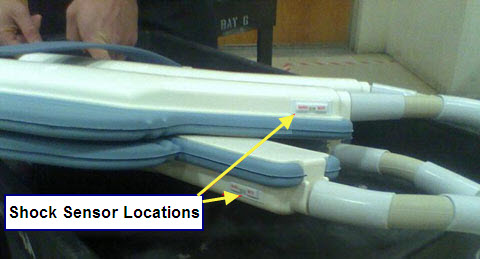
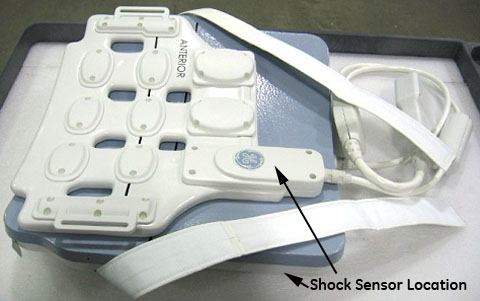
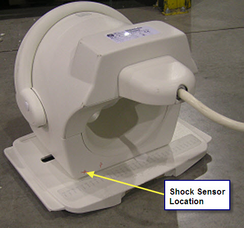
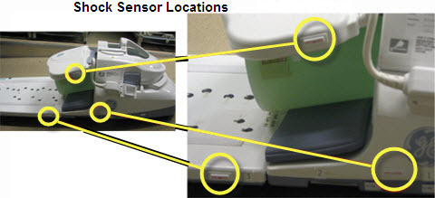
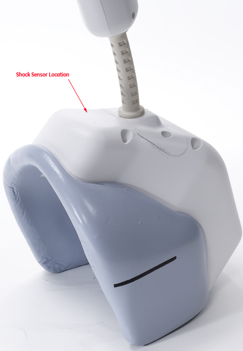
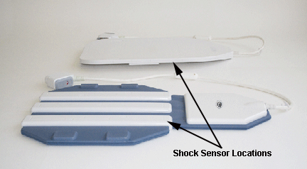
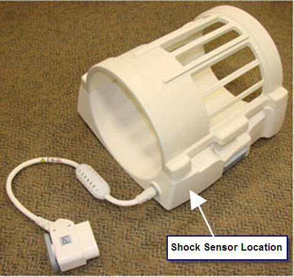

Illustration 1: Body Array Coil - Shock Sensor Placement

| NOTE: | The actual location of the shock sensor on your coil may differ slightly from that shown in the following illustrations. Use your best judgment and the guidelines in Guidelines for Placement when placing the sensor. |
For the following coils, place the sensor per Illustration 1:
1.5T Prima 9000 8-Channel Body Array
1.5T Signa HD 8-Channel Body Array Coil
1.5T 12-Channel Body Array Coil
1.5T Signa Horizon Pelvic Phased Array Coil
1.5T Torso Pelvis Array Coil
1.5T CV/i Peripheral Vascular
USAI 1.5T Flow 7000 Phased Array Peripheral Vascular Coil
Illustration 1: Body Array Coil - Shock Sensor Placement
For the following coils, place the sensor per Illustration 2:
1.5T Breast Coil
1.5T HD Vibrant Bilateral Breast Array Coil
3.0T HD Breast Array Coil
Illustration 2: Bilateral Breast Array Coil - Shock Sensor Placement

For the following coils, place the sensor per Illustration 3.
MRID 1.5 Open Breast Coil
1.5T HD 4-Channel Breast Array Coil
Illustration 3: Open Breast Coil - Shock Sensor Placement

For the following coils, place the sensor per Illustration 4:
1.5T 8-Channel Cardiac Array
1.5T Signa HD Cardiac Coil
Illustration 4: Cardiac Coil - Shock Sensor Placement

For the following coils, place the sensor per Illustration 5.
1.5T 32-Channel Cardiac Array
3.0T 32-Channel Cardiac Array
Illustration 5: 32-Channel Cardiac Array Coil - Shock Sensor Placement

For the 3.0T Cardiac Coil, place the sensor per Illustration 6.
Illustration 6: 3.0T Cardiac Coil - Shock Sensor Placement

For the following coils, place the sensor per Illustration 7:
1.5T High Res Wrist Coil
1.5T HD 8-Channel Wrist Array
1.5T HD 4-Channel Wrist Array
3.0T 8-Channel Wrist Coil
Illustration 7: Wrist Coil - Shock Sensor Placement

For the following coils, place the sensor per Illustration 8:
1.5T HD Lower Leg Coil
1.5T HD 16-Channel Lower Leg Array Coil
Illustration 8: Lower Leg Coil - Shock Sensor Placement

For the following coils, place the sensor per Illustration 9:
1.5T Knee Phased Array Coil
1.5T HD Knee Array
3.0T HD T/R Knee Array Coil
Illustration 9: Knee Array Coil - Shock Sensor Placement

For the following coils, place the sensor per Illustration 10:
MedAdv 1.5T Extremity Coil
1.5T T/R PA Knee/Foot Coil
1.5T HD T/R Quad Extremity Coil
3.0T GE Signa Quad Extremity Coil
3.0T Signa EXCITE Quadrature Extremity Coil
3.0T T/R Quad Extremity Coil
Illustration 10: T/R Quad Extremity Coil - Shock Sensor Placement

For the following coils, place the sensor per Illustration 11:
1.5T HD 8-Channel Foot/Ankle Coil
3.0T 8-Channel Foot/Ankle Coil
Illustration 11: Foot/Ankle Coil - Shock Sensor Placement

For the following coils, place the sensor per Illustration 12:
1.5T 8-Channel High Resolution Brain Array
1.5T Quad Head Coil (Classic)
3.0T Head Coil
3.0T 8-Channel High Res Brain Array
Illustration 12: Brain Array Coil - Shock Sensor Placement

For the following coils, place the sensor per Illustration 13:
1.5T Head/Neck/Spine (HNS) Coil/ HN (Pos) Unit
1.5T Head/Neck/Spine (HNS) Coil/ Neck Chest Unit
1.5T Head/Neck/Spine (HNS) Coil/ TL Unit
3.0T HNS/ HNU
3.0T HNS/ Neck Chest
3.0T HNS/ TL Unit
3.0T HNS Array
Illustration 13: HNS Coil - Shock Sensor Placement

For the following coils, place the sensor per Illustration 14:
1.5T Quadrature Neurovascular Coil
MRID 1.5T Phased Array Neurovascular Coil
MRID 1.5T OPEN Neurovascular Coil
1.5T Quadrature Neurovascular Array Coil
GE 1.5T 8-Channel Neurovascular Array
1.5T HD Neurovascular Array
1.5T HD 8-Channel Neurovascular Array
3.0T 4-Channel Nuerovascular
3.0T HD Neurovascular Array
Illustration 14: NV Array Coil - Shock Sensor Placement

For the following coils, place the sensor per Illustration 15:
1.5T Quadrature T/L Spine Coil
1.5T Quadrature Cervical Spine Coil
1.5T CTL Phased Array Coil
USAI 1.5/1.0T CTL Phased Array Coil
1.5T 8-Channel CTL Spine Coil
1.5T Signa HD 8-Channel CTL
3.0T 4-Channel CTL Array
3.0T Phased Array CTL
3.0T HD 8-Channel CTL
Illustration 15: CTL Coil - Shock Sensor Placement

For the following coils, place the sensor per Illustration 16:
1.5T Shoulder Coil
MRID 1.5T Phased Array Shoulder Coil
1.5T Mark 9000 Phased Array Shoulder Coil
1.5T Phased Array Shoulder Coil
1.5T Phased Array Shoulder Coil
1.5T HD 8-Channel Shoulder Coil
1.5T 3-Channel Shoulder Array
3.0T HD Shoulder Array
3.0T Signa HDx Shoulder Coil
3.0T HD 8-Channel Shoulder Coil
Illustration 16: Shoulder Coil - Shock Sensor Placement

For the following coils, place the sensor per Illustration 17:
3.0T Excite 8-Channel Torso Array Coil
3.0T HD 8-Channel Torso Coil
Illustration 17: Torso Coil - Shock Sensor Placement

For the 3.0T 32-Channel Torso Array coil, place the sensor per Illustration 18.
Illustration 18: 3.0T 32-Channel Torso Array Coil - Shock Sensor Placement

For the following coils, place the sensor per Illustration 19:
1.5T GE Signa Infinity Split Head Coil
1.5T TR Split Top Head Coil
3.0T GE Signa Infinity Split Head Coil
3.0T Split Head Coil
Illustration 19: Split Head Coil - Shock Sensor Placement
